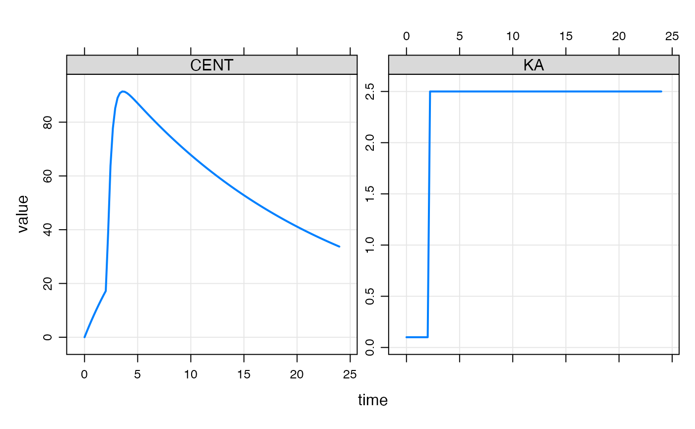
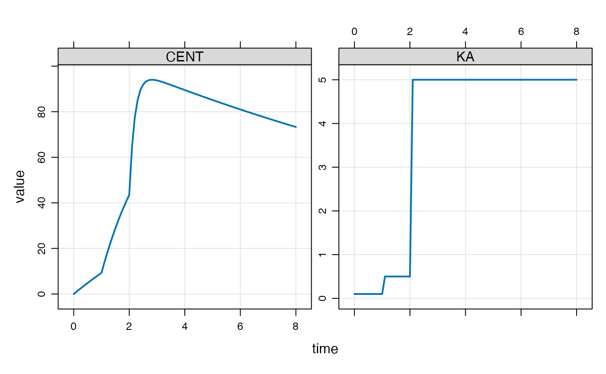

A modeled event is a discontinuity introduced into the simulation at a time and with characteristics that are determined within the model itself, rather than the standard setup of specifying these events via the data set.
In this vignette, we’ll focus on creating a discontinuity in the simulation so that the value of a parameter can change at a specific time that is not necessarily chosen prior to the run time.
For example, we might wish a rate constant to change at some time that is not found in a record in the input data set. We can make this happen from the model code itself using mtime().
Let’s make KA change at 2.1 hours (change_t parameter in the example below).
[ param ]
CL = 1, V = 20, KA1 = 0.1, KA2 = 2.5, change_t = 2.1
[ pkmodel ]
cmt = "GUT,CENT", depot = TRUE
[ main ]
double mt = self.mtime(change_t);
capture KA = KA1;
if(TIME > mt) KA = KA2;
if(TIME == change_t) {
mrg::report("wait a minute ... time is 2.1?");
}Again, the main motivation for this is just convenience and economy of code: we register the event time and get that time returned into a variable that we can reference later on, checking if we are past that time or not.
library(mrgsolve)
library(dplyr)
mod <- mread_cache("mtime-model.txt")
mod %>% ev(amt=100) %>% mrgsim(delta = 0.222) %>% plot(CENT+KA~time)
You won’t see the message that we actually stumbled on 2.1 hours in the simulation even though it was not in the lineup when the simulation started.
We could keep track of several mtimes like this
[ set ] end=8, delta=0.1
[ param ]
CL = 1, V = 20, KA1 = 0.1, KA2 = 0.5, KA3 = 5, change_t = 1
[ pkmodel ]
cmt = "GUT,CENT", depot = TRUE
[ main ]
double mt = self.mtime(change_t);
double mt2 = self.mtime(change_t + 1);
capture KA = KA1;
if(TIME > mt) KA = KA2;
if(TIME > mt2) KA = KA3;